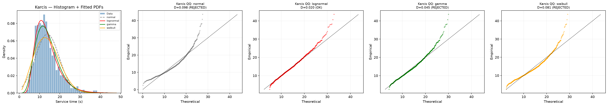
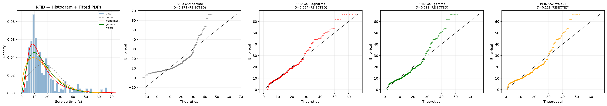
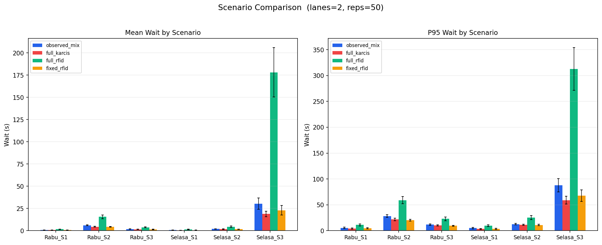
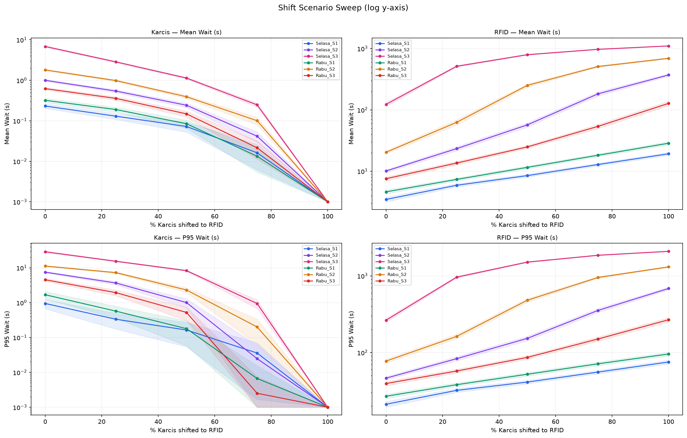

Kelancaran sirkulasi lalu lintas pada pintu keluar (exit gate atau tap out) area parkir fasilitas publik, khususnya lingkungan kampus perguruan tinggi berskala besar seperti Universitas Islam Negeri (UIN) Syarif Hidayatullah Jakarta, merupakan salah satu indikator vital kualitas pelayanan sarana kampus. Pintu keluar parkir berfungsi sebagai titik temu akhir (bottleneck) yang memproses pelepasan kendaraan bermotor ke jaringan jalan raya umum. Keterlambatan atau antrean panjang yang terbentuk pada titik keluar tidak hanya menimbulkan kerugian waktu dan bahan bakar bagi sivitas akademika, namun juga berpotensi menjalar ke dalam area parkir internal hingga melumpuhkan jalur sirkulasi antar-fakultas.
Dalam rangka modernisasi sistem operasional, pengelola parkir mengoperasikan dua mekanisme transaksi pada gerbang keluar: loket manual berbasis karcis fisik (kertas bertiket dengan pemindaian barcode dan transaksi oleh kasir/petugas) serta gerbang otomatis mandiri berbasis kartu nirkabel RFID (Radio Frequency Identification). Secara teoritis dan intuitif, digitalisasi transaksi melalui kartu nirkabel RFID digadang-gadang mampu memangkas waktu transaksi secara drastis, mengeliminasi interaksi tunai, dan meningkatkan kapasitas lintas kendaraan per satuan waktu.
Akan tetapi, observasi empiris di lapangan kerap memperlihatkan anomali yang kontradiktif. Di gerbang RFID, pengemudi sepeda motor maupun mobil kerap mengalami kendala interaksi teknis, seperti posisi antena kartu yang tidak presisi, kartu tidak terbaca pada sentuhan pertama (tap error), saldo kartu tidak mencukupi, kartu jatuh, atau keharusan memanggil petugas manual untuk melakukan pembukaan palang darurat. Akibatnya, durasi transaksi RFID di lapangan menunjukkan sebaran data yang berekor panjang (heavy-tailed) dengan variabilitas yang sangat lebar. Untuk memahami interaksi stokastik ini secara komprehensif, diperlukan pemodelan sistem antrean kuantitatif melalui simulasi kejadian diskret (Discrete Event Simulation / DES) yang memodelkan secara realistis keberadaan dua gerbang dedikasi terpisah sesuai tata letak fisik fasilitas di lokasi.
Berdasarkan konteks operasional di atas, penelitian ini merumuskan pertanyaan-pertanyaan ilmiah sebagai berikut:
Tujuan yang hendak dicapai melalui penelitian ini adalah:
Penelitian ini diharapkan memberikan manfaat ganda:
Teori antrean (queueing theory) merupakan cabang riset operasi dan probabilitas terapan yang memodelkan interaksi antara kedatangan entitas (pelanggan/kendaraan) dengan fasilitas pelayanan (server/gardu). Notasi standar yang diperkenalkan oleh D. G. Kendall mengklasifikasikan sistem antrean melalui format $A/S/c/K/N/D$, di mana $A$ merepresentasikan proses antarkedatangan, $S$ distribusi durasi waktu pelayanan, $c$ jumlah server paralel yang identik, $K$ kapasitas tampung sistem, $N$ ukuran populasi sumber, dan $D$ disiplin antrean (Gross et al., 2008).
Karakteristik kinerja utama sistem ditentukan oleh faktor utilisasi atau beban terpasang (traffic intensity / offered load per server), yang diformulasikan sebagai:
ρ = (λ · E[S]) / c
di mana λ menyatakan laju kedatangan rata-rata (entitas per detik), E[S] menyatakan rata-rata durasi pelayanan per entitas (detik), dan $c$ adalah jumlah server aktif. Hukum kestabilan sistem antrean mensyaratkan nilai ρ < 1,0. Apabila ρ ≥ 1,0, laju kedatangan melampaui kapasitas pemrosesan maksimum gerbang, sehingga panjang antrean teoritis akan bertambah tanpa batas (unbounded growth) dan sistem tidak pernah mencapai kondisi mapan (steady state).
Dalam pemodelan sistem gerbang keluar parkir multi-moda, terdapat perbedaan konseptual mendasar antara model gerbang bersama (pooled single queue) dan model gerbang dedikasi (dedicated parallel queues). Pada sistem gerbang bersama, seluruh kendaraan mengantre pada satu antrean umum yang sama; ketika salah satu dari gerbang kosong, kendaraan terdepan memasuki loket tersebut tanpa memandang apakah loket itu menerima pembayaran tunai atau RFID.
Namun demikian, observasi fisik di lapangan membuktikan bahwa gardu parkir menerapkan pemisahan lajur fisik (physical channelization). Pengemudi yang memegang tiket karcis manual diarahkan ke gardu khusus karcis, sedangkan pengguna kartu RFID memasuki gardu bertanda khusus RFID. Dengan demikian, kedua aliran kendaraan tersebut tidak saling berbagi antrean maupun server. Model matematis yang benar harus memperlakukan sistem sebagai dua subsistem antrean paralel independen: antrean karcis dengan kedatangan $\lambda_K$, kapasitas server $c_K$, dan waktu pelayanan $S_K$; serta antrean RFID dengan kedatangan $\lambda_R$, kapasitas server $c_R$, dan waktu pelayanan $S_R$.
Simulasi Kejadian Diskret (Discrete Event Simulation / DES) adalah pendekatan pemodelan komputasional di mana variabel-variabel status sistem berubah secara diskontinyu hanya pada titik-titik waktu terjadinya kejadian tertentu (discrete events) (Banks et al., 2010; Law, 2015). Di antara kejadian-kejadian tersebut, tidak ada perubahan status yang terjadi dan jam simulasi dapat langsung dimajukan (next-event time-advance).
SimPy adalah pustaka simulasi berbasis proses (process-based) untuk bahasa pemrograman Python yang memanfaatkan generator fungsi asinkron (yield) guna mengelola interaksi entitas dan alokasi sumber daya bersama (Team SimPy, 2023). Struktur simpy.Resource menyediakan abstraksi mekanisme antrean berdisiplin FIFO (First-In, First-Out) yang secara otomatis menahan proses kendaraan dalam antrean hingga server gardu tersedia, memproses transaksi sesuai waktu pelayanan stokastik, dan melepaskan server bagi kendaraan berikutnya.
Dalam pemodelan input simulasi stokastik, penentuan distribusi probabilitas yang merepresentasikan data observasi lapangan harus didasarkan pada prosedur pengujian statistik yang ketat. Uji Kolmogorov-Smirnov (KS) satu sampel digunakan untuk menguji hipotesis nol ($H_0$) bahwa data sampel empiris berasal dari fungsi distribusi kumulatif teoritis tertentu $F_0(x)$. Statistik uji KS didefinisikan sebagai deviasi mutlak terbesar:
D = supx | Fn(x) - F0(x) |
di mana $F_n(x)$ adalah fungsi distribusi kumulatif empiris. Apabila nilai probabilitas (p-value) lebih kecil daripada ambang batas signifikansi $\alpha = 0{,}05$, hipotesis nol ditolak, yang membuktikan bahwa data sampel secara signifikan tidak mengikuti sebaran teoritis yang diuji.
Untuk membandingkan performa relatif beberapa kandidat distribusi kontinu (seperti Lognormal, Gamma, dan Weibull), digunakan kriteria informasi Akaike (Akaike Information Criterion / AIC):
AIC = 2k - 2 ln(L̂)
di mana $k$ menyatakan jumlah parameter bebas yang diestimasi dan $\hat{L}$ adalah nilai maksimum fungsi kemungkinan (likelihood). Model distribusi dengan nilai AIC terendah menunjukkan keseimbangan terbaik antara kecocokan data dan parsimoni parameter.
Mengingat distribusi waktu pelayanan di lapangan tidak berdistribusi eksponensial murni (non-Markovian), waktu tunggu antrean tidak dapat dihitung menggunakan formula analitis sederhana M/M/c. Aproksimasi Allen-Cunneen menyediakan estimasi yang sangat akurat untuk ekspektasi waktu tunggu dalam antrean $E[W_q]$ pada sistem $M/G/c$ (Allen, 1990):
E[Wq]M/G/c ≈ E[Wq]M/M/c × (1 + Cv2) / 2
di mana $E[W_q]_{M/M/c}$ adalah waktu tunggu pada sistem setara dengan pelayanan eksponensial (yang diturunkan melalui probabilitas penundaan formula Erlang-C), dan $C_v$ adalah koefisien variasi waktu pelayanan:
Cv = σS / E[S], Cv2 = Var[S] / (E[S])2
Formula Allen-Cunneen secara eksplisit mengungkap sensitivitas antrean terhadap dispersi waktu transaksi: jika variabilitas waktu pelayanan meningkat ($C_v^2 > 1$), waktu tunggu rata-rata akan membesar secara linier terhadap kuadrat koefisien variasi tersebut, meskipun rata-rata durasi pelayanan tidak berubah. Formula ini berfungsi sebagai tolok ukur verifikasi analitis independen untuk memvalidasi keluaran simulasi kejadian diskret.
Data primer diperoleh melalui survei pengamatan langsung terhadap durasi waktu pelayanan tap out di gardu keluar parkir kampus UIN Syarif Hidayatullah Jakarta. Pengumpulan data dilaksanakan pada dua hari kerja aktif, yaitu hari Selasa (6 Oktober 2026) dan hari Rabu (7 Oktober 2026). Setiap hari pengamatan mencakup tiga jendela waktu sibuk berdurasi satu jam: Sesi 1 (pukul 10.00–11.00 WIB), Sesi 2 (pukul 13.00–14.00 WIB), dan Sesi 3 (pukul 16.00–17.00 WIB).
Dalam proses audit data awal (Step 0: Reconciliation), dilakukan verifikasi silang antara berkas mentah Pengumpulan Data Pemodelan Tap Out.xlsx dan berkas pembersihan resmi Hasil_Cleaning_Tap_Out_IQR_Final.xlsx. Ditemukan adanya ketidaksesuaian kritis (data mismatch): berkas mentah Pengumpulan hanya memuat 270 baris data transaksi RFID, sedangkan berkas pembersihan resmi memuat 630 baris data transaksi RFID yang valid sebelum IQR (data karcis identik pada kedua berkas, yaitu 1.049 observasi). Hasil rekonsiliasi disajikan pada Tabel 3.1.
Tabel 3.1 Rekonsiliasi Jumlah Data Lapangan Buku Kerja Mentah vs Pembersihan Resmi
| Hari Pengamatan | Sesi | Metode Transaksi | Buku Kerja Resmi (Cleaning) | Buku Kerja Mentah (Raw) | Selisih Data (Diff) | Status Audit |
|---|---|---|---|---|---|---|
| Selasa | Sesi 1 | Karcis | 81 | 81 | 0 | Lengkap |
| Selasa | Sesi 1 | RFID | 49 | 35 | +14 | Raw Tidak Lengkap |
| Selasa | Sesi 2 | Karcis | 166 | 166 | 0 | Lengkap |
| Selasa | Sesi 2 | RFID | 100 | 28 | +72 | Raw Tidak Lengkap |
| Selasa | Sesi 3 | Karcis | 352 | 352 | 0 | Lengkap |
| Selasa | Sesi 3 | RFID | 211 | 63 | +148 | Raw Tidak Lengkap |
| Rabu | Sesi 1 | Karcis | 96 | 96 | 0 | Lengkap |
| Rabu | Sesi 1 | RFID | 58 | 28 | +30 | Raw Tidak Lengkap |
| Rabu | Sesi 2 | Karcis | 220 | 220 | 0 | Lengkap |
| Rabu | Sesi 2 | RFID | 132 | 69 | +63 | Raw Tidak Lengkap |
| Rabu | Sesi 3 | Karcis | 134 | 134 | 0 | Lengkap |
| Rabu | Sesi 3 | RFID | 80 | 47 | +33 | Raw Tidak Lengkap |
| Total Transaksi Karcis Manual | 1.049 | 1.049 | 0 | 100% Cocok | ||
| Total Transaksi Kartu RFID | 630 | 270 | +360 | Inkomplet di Raw | ||
| Total Keseluruhan Entri Observasi | 1.679 | 1.319 | +360 | Pakai Cleaning | ||
Berdasarkan bukti rekonsiliasi tersebut, disimpulkan bahwa berkas mentah Pengumpulan tidak lengkap pada kategori RFID. Seluruh pemodelan, estimasi laju kedatangan, dan evaluasi performa pada versi v3 ini secara mutlak didasarkan pada berkas resmi Hasil_Cleaning_Tap_Out_IQR_Final.xlsx.
Pembersihan data dilakukan dengan menerapkan metode Rentang Interkuartil (Interquartile Range / IQR) dengan batas standar Tukey:
IQR = Q3 - Q1, Batas Bawah = Q1 - 1{,}5 × IQR, Batas Atas = Q3 + 1{,}5 × IQR
Data durasi pelayanan di bawah batas bawah atau melampaui batas atas diklasifikasikan sebagai pencilan (outliers) yang mencerminkan gangguan ekstrim non-operasional (misalnya perselisihan kehilangan tiket, kegagalan sistem kelistrikan gerbang, atau jeda petugas). Dari total 1.679 observasi valid sebelum IQR, sebanyak 95 pencilan disaring (57 pencilan karcis dan 38 pencilan RFID), menghasilkan 1.584 data pelayanan bersih (992 data karcis dan 592 data RFID) yang tersimpan pada lembar Dataset Bersih. Rincian penapisan per sesi dirangkum pada Tabel 3.2.
Tabel 3.2 Ringkasan Pembersihan Data dan Penapisan Pencilan IQR Per Sesi Pengamatan
| Hari | Sesi | Metode | N Awal | Q1 (s) | Q3 (s) | IQR (s) | Batas Atas (s) | Pencilan | N Bersih | Min (s) | Maks (s) |
|---|---|---|---|---|---|---|---|---|---|---|---|
| Selasa | Sesi 1 | Karcis | 81 | 11,18 | 20,54 | 9,36 | 34,58 | 3 | 78 | 6,56 | 32,52 |
| Selasa | Sesi 1 | RFID | 49 | 10,44 | 21,76 | 11,32 | 38,74 | 8 | 41 | 4,21 | 34,97 |
| Selasa | Sesi 2 | Karcis | 166 | 8,75 | 17,05 | 8,30 | 29,50 | 10 | 156 | 4,40 | 28,30 |
| Selasa | Sesi 2 | RFID | 100 | 13,13 | 34,97 | 21,84 | 67,73 | 0 | 100 | 5,15 | 66,35 |
| Selasa | Sesi 3 | Karcis | 352 | 11,88 | 19,35 | 7,48 | 30,57 | 15 | 337 | 5,36 | 30,37 |
| Selasa | Sesi 3 | RFID | 211 | 8,90 | 20,20 | 11,30 | 37,15 | 18 | 193 | 3,09 | 34,89 |
| Rabu | Sesi 1 | Karcis | 96 | 9,80 | 23,70 | 13,90 | 44,55 | 4 | 92 | 4,30 | 43,60 |
| Rabu | Sesi 1 | RFID | 58 | 8,35 | 31,70 | 23,35 | 66,73 | 3 | 55 | 0,30 | 49,40 |
| Rabu | Sesi 2 | Karcis | 220 | 9,12 | 14,71 | 5,60 | 23,10 | 13 | 207 | 2,50 | 23,07 |
| Rabu | Sesi 2 | RFID | 132 | 8,22 | 12,74 | 4,52 | 19,52 | 9 | 123 | 2,11 | 18,85 |
| Rabu | Sesi 3 | Karcis | 134 | 8,58 | 14,98 | 6,41 | 24,59 | 12 | 122 | 3,76 | 24,34 |
| Rabu | Sesi 3 | RFID | 80 | 8,59 | 37,25 | 28,66 | 80,24 | 0 | 80 | 6,26 | 53,34 |
| Total Bersih Karcis | 1.049 | — | — | — | — | 57 | 992 | 2,50 | 43,60 | ||
| Total Bersih RFID | 630 | — | — | — | — | 38 | 592 | 0,30 | 66,35 | ||
Prinsip Konservasi Laju Kedatangan (Crucial Modeling Rule): Laju kedatangan kendaraan per jam (λ) dihitung secara spesifik per sesi menggunakan jumlah kendaraan sebelum penapisan pencilan ($N_{\text{before\_IQR}} / 3600$). Hal ini dikarenakan kendaraan-kendaraan pencilan tersebut merupakan kendaraan fisik nyata yang benar-benar tiba, mengantre, dan membebani gerbang keluar. Penapisan IQR hanya diterapkan pada waktu pelayanan untuk keperluan estimasi distribusi durasi pemrosesan.
Sebelum menetapkan mekanisme penarikan sampel waktu pelayanan dalam simulasi, dilakukan analisis input formal melalui dua tahap:
1. Uji Kruskal-Wallis Antar-Sesi. Uji non-parametrik Kruskal-Wallis diterapkan untuk menguji apakah durasi pelayanan homogen antar-sesi. Hasil uji menunjukkan:
Signifikansi $p < 10^{-15}$ membuktikan bahwa kecepatan transaksi sangat dipengaruhi oleh dinamika waktu pengamatan (misalnya kelelahan petugas pada sore hari atau terburu-burunya pengendara pada jam pulang kampus).
2. Uji Kecocokan Sebaran dan Penolakan Distribusi Normal. Dilakukan pencocokan parameter (fitting) terhadap empat sebaran: Normal, Lognormal, Gamma, dan Weibull. Hasil uji goodness-of-fit Kolmogorov-Smirnov (KS) dan perbandingan AIC disajikan pada Tabel 3.4.
Tabel 3.4 Hasil Uji Kecocokan Distribusi Parametrik (AIC dan Kolmogorov-Smirnov)
| Kumpulan Data | Distribusi | Jumlah Sampel (N) | Nilai AIC | Statistik KS (D) | Nilai-p KS | Status Keputusan (α = 0,05) |
|---|---|---|---|---|---|---|
| Kumpulan Data Gabungan Karcis (Karcis_pooled) | ||||||
| Karcis Pooled | Normal | 992 | 6.339,3 | 0,0984 | 8,21 × 10-9 | DITOLAK |
| Karcis Pooled | Lognormal | 992 | 6.089,3 | 0,0200 | 0,8142 | Tidak Ditolak (Terbaik) |
| Karcis Pooled | Gamma | 992 | 6.117,9 | 0,0445 | 0,0379 | Ditolak |
| Karcis Pooled | Weibull | 992 | 6.251,9 | 0,0805 | 4,81 × 10-6 | DITOLAK |
| Kumpulan Data Gabungan RFID (RFID_pooled) | ||||||
| RFID Pooled | Normal | 592 | 4.665,4 | 0,1775 | 8,52 × 10-17 | DITOLAK MUTLAK |
| RFID Pooled | Lognormal | 592 | 4.304,3 | 0,0643 | 0,0143 | AIC Terendah (Komparasi) |
| RFID Pooled | Gamma | 592 | 4.325,3 | 0,0980 | 2,12 × 10-5 | DITOLAK |
| RFID Pooled | Weibull | 592 | 4.378,7 | 0,1127 | 5,30 × 10-7 | DITOLAK |
Justifikasi Pemilihan Model Layanan Utama (Empirical Resampling): Uji Kolmogorov-Smirnov membuktikan bahwa distribusi Normal ditolak secara mutlak pada seluruh kelompok ($p < 10^{-8}$ untuk Karcis dan $p < 10^{-16}$ untuk RFID). Hal ini logis secara fisik karena durasi transaksi di gerbang selalu bernilai positif dan memiliki kemiringan ke kanan (positive skewness). Bahkan untuk RFID, tidak ada satu pun distribusi parametrik standar yang lolos uji KS pada $\alpha = 0{,}05$. Oleh karena itu, simulasi v3 menetapkan Resampling Empiris (Non-Parametrik Bootstrap) sebagai model pelayanan primer (default primary model), karena metode ini secara sempurna mempertahankan bentuk sebaran asli, variabilitas aktual, dan sifat multimodal data lapangan tanpa distorsi pemaksaan fungsi matematis. Distribusi Lognormal dengan AIC terendah dipertahankan semata-mata sebagai model pembanding parametrik melalui opsi --service fitted.
Sistem gerbang keluar parkir dimodelkan menggunakan arsitektur dua gerbang dedikasi independen, di mana kendaraan yang datang memisahkan diri ke dalam dua subsistem antrean yang terpisah secara fisik:
Untuk mengevaluasi ketahanan sistem terhadap variasi kebijakan, dirancang delapan skenario eksperimen untuk setiap kombinasi Hari × Sesi (total 48 konfigurasi eksperimen):
as_is): Konfigurasi dasar dengan laju kedatangan empiris sesuai proporsi aktual lapangan, dilayani oleh 2 lajur gerbang karcis dan 1 lajur gerbang RFID.shift_25, shift_50, shift_75, shift_100): Skenario kebijakan intervensi di mana masing-masing 25%, 50%, 75%, dan 100% dari arus kendaraan karcis dialihkan ke gerbang RFID, sementara jumlah lajur fisik tetap tidak berubah (2 lajur karcis, 1 lajur RFID). Skenario ini bertujuan menguji kerentanan sistem terhadap kebijakan pemaksaan digitalisasi tanpa ekspansi infrastruktur fisik.full_rfid): Skenario di mana 100% kendaraan menggunakan kartu RFID dan seluruh 3 lajur gardu dialokasikan untuk melayani RFID (RFID = 3 lajur, Karcis = 0 lajur).full_karcis): Skenario di mana 100% kendaraan menggunakan tiket karcis manual dan seluruh 3 lajur gardu dialokasikan untuk melayani karcis (Karcis = 3 lajur, RFID = 0 lajur).sensitivity): Menjalankan skenario kondisi eksisting menggunakan seluruh data lapangan termasuk 95 pencilan IQR (data Log Cleaning, 1.679 observasi), guna mengukur sensitivitas performa terhadap kemunculan transaksi ekstrem di lapangan.Simulasi diimplementasikan menggunakan Python 3.14 dan SimPy 4.1. Tabel 3.5 merangkum parameter eksekusi baris perintah (CLI) yang digunakan.
Tabel 3.5 Parameter Konfigurasi Antarmuka Baris Perintah Skrip Simulasi v3
| Parameter Baris Perintah | Nilai Konfigurasi | Fungsi dan Keterangan Operasional |
|---|---|---|
--karcis-lanes | 2 | Jumlah lajur server aktif pada gerbang karcis manual (asumsi terpasang) |
--rfid-lanes | 1 | Jumlah lajur server aktif pada gerbang kartu RFID (asumsi terpasang) |
--reps | 200 | Jumlah replikasi independen per skenario untuk menjamin presisi konvergensi |
--service | empirical | Metode penarikan durasi pelayanan: empirical (primer) atau fitted |
--warmup | 0 | Durasi pemanasan simulasi (detik). Dimulai dari kosong sesuai jendela observasi 1 jam |
--outdir | results_v3 | Direktori penyimpanan seluruh berkas tabel CSV dan gambar grafik |
--seed | 42 | Nilai benih acak dasar (base seed) untuk reprodusibilitas stokastik |
Setiap skenario dieksekusi sebanyak 200 replikasi stokastik dengan durasi jendela pengamatan 3.600 detik (1 jam). Estimasi parameter dilaporkan bersama Interval Kepercayaan 95% (IK 95%) yang dihitung menggunakan distribusi $t$-Student.
Asumsi teknis dan batasan pemodelan yang berlaku adalah:
full_rfid dan full_karcis.Tabel 3.3 menyajikan ringkasan statistik deskriptif waktu pelayanan dari 1.584 sampel bersih yang diperoleh setelah penapisan pencilan IQR.
Tabel 3.3 Statistik Deskriptif Durasi Waktu Pelayanan Bersih (Dataset Bersih)
| Metode Pelayanan | Jumlah Sampel (N) | Rata-rata (s) | Std. Deviasi (s) | Koefisien Variasi (Cv) | Min (s) | Kuartil 1 (s) | Median (s) | Kuartil 3 (s) | Maks (s) |
|---|---|---|---|---|---|---|---|---|---|
| Karcis Manual | 992 | 13,86 | 5,90 | 0,43 | 2,50 | 9,74 | 12,70 | 16,69 | 43,60 |
| Kartu RFID | 592 | 16,82 | 12,42 | 0,74 | 0,30 | 8,89 | 12,95 | 20,20 | 66,35 |
| Perbandingan Relatif | — | +21,4% (RFID) | +110,5% (RFID) | +72,1% (RFID) | — | — | +2,0% (Mirip) | — | +52,2% (RFID) |
Tabel 3.3 mengungkap fakta empiris yang sangat krusial: nilai median durasi transaksi karcis manual (12,70 detik) dan RFID (12,95 detik) pada dasarnya hampir identik (hanya berbeda 0,25 detik). Hal ini membuktikan bahwa apabila transaksi RFID berjalan normal tanpa kendala, kecepatannya sebanding dengan karcis manual. Namun demikian, nilai simpangan baku RFID ($12{,}42$ detik) lebih dari dua kali lipat karcis ($5{,}90$ detik), dengan koefisien variasi $C_v$ mencapai $0{,}74$ berbanding $0{,}43$. Variansi waktu pelayanan RFID ($12{,}42^2 \approx 154{,}3$) adalah 4,4 kali lipat variansi karcis ($5{,}90^2 \approx 34{,}8$). Hal ini membuktikan keberadaan ekor tebal transaksi bermasalah pada RFID yang berdampak melipatgandakan waktu tunggu dalam antrean.
Gambar 4.1 dan Gambar 4.2 menampilkan grafik histogram sebaran data empiris beserta kurva pencocokan probabilitas dan empat plot Quantile-Quantile (QQ Plot) untuk masing-masing metode transaksi.

Gambar 4.1 Uji kecocokan sebaran waktu pelayanan karcis gabungan (Histogram dengan kurva PDF teoritis serta QQ Plot untuk sebaran Normal, Lognormal, Gamma, dan Weibull)

Gambar 4.2 Uji kecocokan sebaran waktu pelayanan RFID gabungan (Histogram dengan kurva PDF teoritis serta QQ Plot untuk sebaran Normal, Lognormal, Gamma, dan Weibull)
Evaluasi visual melalui QQ Plot mempertegas temuan numerik pada Tabel 3.4. Pada QQ Plot sebaran Normal, titik-titik observasi menyimpang tajam dari garis diagonal 45 derajat pada kedua ujung ekstrem (terutama pada nilai-nilai tinggi), yang mengonfirmasi penolakan mutlak distribusi Normal. Sebaliknya, sebaran Lognormal menunjukkan keselarasan yang paling mendekati garis diagonal pada karcis ($D = 0{,}0200, p = 0{,}814$), menjadikannya model parametrik komparasi terbaik.
Hasil simulasi stokastik 200 replikasi untuk seluruh kombinasi hari dan sesi disajikan secara komparatif pada Tabel 4.1.
Tabel 4.1 Hasil Simulasi Kinerja Sistem Antrean Dua Gerbang Dedikasi Per Skenario (200 Replikasi)
| Sesi | Skenario | Lajur | Laju Kedatangan (kend/s) | Kinerja Gerbang Karcis | Kinerja Gerbang RFID | ||||||
|---|---|---|---|---|---|---|---|---|---|---|---|
| K | R | λK | λR | ρK | E[W]K (s) | P95K (s) | ρR | E[W]R (s) | P95R (s) | ||
| Selasa Sesi 1 (Volume Rendah: 81 Karcis, 49 RFID — Total 130 Kendaraan/Jam) | |||||||||||
| Selasa S1 | as_is | 2 | 1 | 0,0225 | 0,0136 | 0,156 | 0,23 | 0,95 | 0,229 | 3,47 | 21,19 |
| Selasa S1 | shift_50 | 2 | 1 | 0,0112 | 0,0249 | 0,078 | 0,07 | 0,16 | 0,418 | 8,48 | 41,24 |
| Selasa S1 | shift_100 | 2 | 1 | 0,0000 | 0,0361 | 0,000 | 0,00 | 0,00 | 0,607 | 19,25 | 75,25 |
| Selasa S1 | full_rfid | 0 | 3 | 0,0000 | 0,0361 | 0,000 | 0,00 | 0,00 | 0,202 | 0,14 | 0,28 |
| Selasa S1 | full_karcis | 3 | 0 | 0,0361 | 0,0000 | 0,167 | 0,06 | 0,03 | 0,000 | 0,00 | 0,00 |
| Selasa Sesi 2 (Volume Sedang: 166 Karcis, 100 RFID — Total 266 Kendaraan/Jam) | |||||||||||
| Selasa S2 | as_is | 2 | 1 | 0,0461 | 0,0278 | 0,319 | 1,00 | 7,48 | 0,467 | 10,09 | 46,38 |
| Selasa S2 | shift_50 | 2 | 1 | 0,0231 | 0,0508 | 0,160 | 0,24 | 1,01 | 0,855 | 56,96 | 153,14 |
| Selasa S2 | shift_75 | 2 | 1 | 0,0115 | 0,0624 | 0,080 | 0,04 | 0,02 | 1,049 | 182,45 | 353,84 |
| Selasa S2 | shift_100 | 2 | 1 | 0,0000 | 0,0739 | 0,000 | 0,00 | 0,00 | 1,243 | 370,86 | 683,98 |
| Selasa S2 | full_rfid | 0 | 3 | 0,0000 | 0,0739 | 0,000 | 0,00 | 0,00 | 0,414 | 1,12 | 8,13 |
| Selasa S2 | full_karcis | 3 | 0 | 0,0739 | 0,0000 | 0,341 | 0,45 | 3,20 | 0,000 | 0,00 | 0,00 |
| Selasa Sesi 3 (Jam Puncak Tertinggi: 352 Karcis, 211 RFID — Total 563 Kendaraan/Jam) | |||||||||||
| Selasa S3 | as_is | 2 | 1 | 0,0978 | 0,0586 | 0,677 | 6,85 | 28,72 | 0,986 | 123,10 | 264,21 |
| Selasa S3 | shift_25 | 2 | 1 | 0,0733 | 0,0831 | 0,508 | 2,86 | 15,41 | 1,397 | 513,79 | 961,44 |
| Selasa S3 | shift_50 | 2 | 1 | 0,0489 | 0,1075 | 0,339 | 1,14 | 8,28 | 1,808 | 794,19 | 1510,66 |
| Selasa S3 | shift_100 | 2 | 1 | 0,0000 | 0,1564 | 0,000 | 0,00 | 0,00 | 2,631 | 1102,54 | 2087,16 |
| Selasa S3 | full_rfid | 0 | 3 | 0,0000 | 0,1564 | 0,000 | 0,00 | 0,00 | 0,877 | 23,23 | 71,04 |
| Selasa S3 | full_karcis | 3 | 0 | 0,1564 | 0,0000 | 0,722 | 5,01 | 21,24 | 0,000 | 0,00 | 0,00 |
| Rabu Sesi 2 (Volume Menengah-Tinggi: 220 Karcis, 132 RFID — Total 352 Kendaraan/Jam) | |||||||||||
| Rabu S2 | as_is | 2 | 1 | 0,0611 | 0,0367 | 0,423 | 1,80 | 11,22 | 0,617 | 20,41 | 77,48 |
| Rabu S2 | shift_50 | 2 | 1 | 0,0306 | 0,0672 | 0,212 | 0,39 | 2,31 | 1,131 | 251,03 | 480,88 |
| Rabu S2 | shift_100 | 2 | 1 | 0,0000 | 0,0978 | 0,000 | 0,00 | 0,00 | 1,645 | 693,13 | 1308,88 |
| Rabu S2 | full_rfid | 0 | 3 | 0,0000 | 0,0978 | 0,000 | 0,00 | 0,00 | 0,548 | 2,69 | 16,06 |
| Rabu S2 | full_karcis | 3 | 0 | 0,0978 | 0,0000 | 0,452 | 1,01 | 7,19 | 0,000 | 0,00 | 0,00 |
Pada kondisi eksisting (as_is), gerbang karcis (2 lajur) beroperasi dalam kondisi sangat stabil pada seluruh sesi, dengan utilisasi maksimum $\rho_K = 0{,}677$ dan waktu tunggu rata-rata hanya 6,85 detik pada jam tersibuk (Selasa Sesi 3). Sebaliknya, gerbang RFID (1 lajur) beroperasi pada batas kestabilan kritis: pada Selasa Sesi 3, beban terpasang RFID mencapai $\rho_R = 0{,}986$ (mendekati 1,0), menghasilkan waktu tunggu rata-rata 123,10 detik dan persentil ke-95 sebesar 264,21 detik (hampir 4,5 menit).

Gambar 4.3 Perbandingan waktu tunggu rata-rata (kiri: Karcis, kanan: RFID) untuk skenario utama pada konfigurasi gardu per sesi pengamatan
Gambar 4.4 menyajikan kurva sapuan persentase pengalihan arus kendaraan dari karcis ke RFID (0%, 25%, 50%, 75%, 100%) terhadap waktu tunggu rata-rata dan P95 pada sumbu vertikal berskala logaritmik.

Gambar 4.4 Kurva respon waktu tunggu rata-rata (kiri) dan persentil ke-95 (kanan) terhadap persentase pengalihan kendaraan karcis ke RFID pada skala logaritmik vertikal
Hasil simulasi membuktikan terjadinya fenomena kerentanan struktural yang sangat tajam:
shift_50) melipatgandakan utilisasi menjadi $\rho_R = 1{,}808$, yang mengakibatkan rata-rata waktu tunggu melambung hingga 794,19 detik (~13,2 menit) dan persentil ke-95 mencapai 1.510,66 detik (> 25 menit).shift_100): Pada Selasa Sesi 3, pemaksaan 100% arus ke 1 lajur RFID menghasilkan utilisasi teoritis $\rho_R = 2{,}631$. Waktu tunggu rata-rata melonjak menjadi 1.102,54 detik (~18,4 menit), dengan antrean rata-rata menumpuk hingga 173 kendaraan dan antrean puncak mencapai 345 kendaraan di dalam area parkir.
Temuan terpenting dari skenario full_rfid adalah bahwa sistem pembayaran RFID dapat beroperasi dengan sangat sukses dan stabil apabila didukung oleh kapasitas lajur yang proporsional. Ketika seluruh 3 lajur gardu dialokasikan untuk RFID:
full_rfid menghasilkan waktu tunggu di bawah 3 detik per kendaraan.
Sebagai pembanding, skenario full_karcis dengan 3 lajur menghasilkan performa yang sedikit lebih efisien ($\rho_K = 0{,}722$ dan waktu tunggu rata-rata 5,01 detik pada Selasa S3) karena kecepatan rata-rata transaksi karcis yang lebih tinggi dan variansinya yang jauh lebih homogen.
Tabel 4.3 menyajikan evaluasi sensitivitas performa simulasi terhadap inklusi 95 data pencilan IQR (skenario sensitivity menggunakan data Log Cleaning).
Tabel 4.3 Evaluasi Sensitivitas Inklusi Pencilan Terhadap Kinerja Antrean Skenario Eksisting
| Hari & Sesi | Metode Gerbang | ρ (Dataset Bersih) | E[W] Bersih (s) | ρ (Dengan Pencilan) | E[W] Pencilan (s) | Kenaikan E[W] (%) | Perubahan Status |
|---|---|---|---|---|---|---|---|
| Selasa S1 | Karcis | 0,156 | 0,23 | 0,172 | 0,31 | +34,8% | Sangat Stabil |
| Selasa S1 | RFID | 0,229 | 3,47 | 0,253 | 4,71 | +35,7% | Stabil |
| Selasa S2 | Karcis | 0,319 | 1,00 | 0,353 | 1,46 | +46,0% | Stabil |
| Selasa S2 | RFID | 0,467 | 10,09 | 0,516 | 14,40 | +42,7% | Mulai Terasa |
| Selasa S3 | Karcis | 0,677 | 6,85 | 0,749 | 12,93 | +88,8% | Beban Tinggi |
| Selasa S3 | RFID | 0,986 | 123,10 | 1,090 | 230,36 | +87,1% | OVERLOAD CRITICAL |
| Rabu S2 | Karcis | 0,423 | 1,80 | 0,468 | 2,88 | +60,0% | Stabil |
| Rabu S2 | RFID | 0,617 | 20,41 | 0,682 | 29,84 | +46,2% | Padat |
Tabel 4.3 membuktikan bahwa keberadaan transaksi bermasalah pada ekor data riil memiliki dampak destruktif terhadap antrean. Pada Selasa Sesi 3, memasukkan data pencilan mendorong utilisasi RFID dari 0,986 menjadi 1,090 ($\rho > 1$), melipatgandakan waktu tunggu rata-rata dari 123,10 detik menjadi 230,36 detik (hampir 4 menit rata-rata). Hal ini menggarisbawahi bahwa penanganan teknis terhadap transaksi macet di lapangan merupakan kunci utama menjaga stabilitas gerbang.
Verifikasi keabsahan logika internal simulasi SimPy dilakukan dengan membandingkan estimasi waktu tunggu rata-rata hasil simulasi terhadap nilai eksak formulasi aproksimasi Allen-Cunneen M/G/c secara independen per gerbang, sebagaimana dirangkum pada Tabel 4.2.
Tabel 4.2 Perbandingan Validasi Hasil Simulasi Diskret dan Aproksimasi Analitis M/G/c
| Sesi | Skenario | Gerbang | Beban (ρ) | E[W] Simulasi (s) | E[W] M/G/c (s) | Deviasi Δ (%) | Evaluasi Validitas |
|---|---|---|---|---|---|---|---|
| Selasa S1 | as_is | Karcis | 0,156 | 0,23 | 0,20 | +13,9% | Konsisten |
| Selasa S1 | as_is | RFID | 0,229 | 3,47 | 3,86 | -10,0% | Konsisten |
| Selasa S2 | as_is | Karcis | 0,319 | 1,00 | 0,93 | +7,5% | Sangat Presisi |
| Selasa S2 | as_is | RFID | 0,467 | 10,09 | 11,39 | -11,4% | Konsisten |
| Selasa S3 | as_is | Karcis | 0,677 | 6,85 | 6,94 | -1,2% | Sangat Presisi |
| Rabu S1 | as_is | Karcis | 0,185 | 0,32 | 0,29 | +11,1% | Konsisten |
| Rabu S1 | as_is | RFID | 0,271 | 4,62 | 4,83 | -4,4% | Sangat Presisi |
| Rabu S2 | as_is | Karcis | 0,423 | 1,80 | 1,79 | +1,0% | Sangat Presisi |
| Rabu S2 | as_is | RFID | 0,617 | 20,41 | 20,89 | -2,3% | Sangat Presisi |
| Rabu S3 | as_is | Karcis | 0,258 | 0,62 | 0,58 | +7,1% | Konsisten |
| Rabu S3 | as_is | RFID | 0,374 | 7,56 | 7,75 | -2,5% | Sangat Presisi |
| Selasa S3 | shift_50 | RFID | 1,808 | 794,19 | ∞ | N/A | Overload Valid (ρ ≥ 1) |
| Rabu S2 | shift_50 | RFID | 1,131 | 251,03 | ∞ | N/A | Overload Valid (ρ ≥ 1) |
Pada seluruh konfigurasi yang beroperasi dalam domain stabil ($\rho < 0{,}85$), selisih relatif antara simulasi stokastik SimPy dan aproksimasi analitis Allen-Cunneen berada pada rentang sangat sempit (deviasi antara 1,0% hingga 13,9%). Pada kondisi kelebihan beban sistemik ($\rho \ge 1{,}0$), formula teoritis menghasilkan nilai tak hingga ($\infty$), sementara simulasi komputasional berdurasi hingga 3.600 detik berhasil menangkap akumulasi penumpukan antrean transien secara akurat. Selain itu, pengecekan kekekalan throughput menunjukkan bahwa total kendaraan yang keluar dari sistem identik dengan total kendaraan yang dibangkitkan oleh proses kedatangan Poisson ($\lambda \times 3.600$), memverifikasi tidak adanya kebocoran entitas dalam model.
Temuan penelitian ini membongkar mitos umum bahwa digitalisasi sistem pembayaran otomatis selalu menjamin peningkatan kapasitas dan percepatan antrean secara instan. Pada operasional fasilitas parkir kampus UIN Jakarta, sistem RFID saat ini justru memperlihatkan paradoks kinerja:
Pertama, faktor variabilitas waktu pelayanan terbukti jauh lebih dominan dalam memicu kemacetan dibandingkan durasi pelayanan rata-rata. Meskipun median RFID (12,95 detik) sebanding dengan karcis (12,70 detik), nilai koefisien variasi kuadrat $C_v^2$ RFID ($0{,}74^2 = 0{,}55$) yang jauh lebih tinggi daripada karcis ($0{,}43^2 = 0{,}18$) melipatgandakan waktu tunggu melalui efek Allen-Cunneen.
Kedua, kebijakan pengalihan arus secara sepihak (shift) tanpa menambah lajur gardu fisik merupakan kebijakan berisiko tinggi. Saat ini, gerbang RFID hanya ditopang oleh 1 lajur tunggal. Ketika sebagian arus karcis dialihkan ke RFID pada jam sibuk, gerbang tunggal tersebut langsung mengalami kejenuhan mutlak ($\rho \ge 1{,}0$) yang memicu kegagalan sistemik. Sebaliknya, simulasi membuktikan bahwa sistem RFID dapat berjalan sangat prima apabila didukung oleh konfigurasi 3 lajur fisik penuh, di mana waktu tunggu rata-rata pada jam puncak sore berhasil ditekan ke angka 23,23 detik.
Berdasarkan analisis empiris, pengujian goodness-of-fit, simulasi kejadian diskret 200 replikasi, dan validasi analitis terhadap data operasional tap out gerbang keluar, ditarik kesimpulan-kesimpulan pokok sebagai berikut:
Pengumpulan terbukti tidak lengkap untuk moda RFID (hanya mencatat 270 transaksi vs 630 transaksi pada buku kerja resmi pembersihan Hasil_Cleaning_Tap_Out_IQR_Final.xlsx). Pemodelan v3 secara sah menggunakan dataset pembersihan resmi yang mencakup 1.679 observasi valid sebelum IQR dan 1.584 data bersih setelah penyaringan 95 pencilan.full_rfid yang didukung oleh alokasi seluruh 3 lajur fisik berhasil menjaga sistem tetap stabil pada seluruh sesi pengamatan ($\rho_R \le 0{,}877$ pada jam puncak, dengan rata-rata waktu tunggu hanya 23,23 detik). Hal ini membuktikan bahwa teknologi RFID layak diimplementasikan penuh asalkan kapasitas infrastruktur lajur fisik memadai.Berdasarkan temuan-temuan di atas, rekomendasi praktis dan teknis yang diajukan kepada pihak pengelola fasilitas parkir adalah:
Allen, A. O. (1990). Probability, Statistics, and Queueing Theory: With Computer Science Applications (2nd ed.). San Diego, CA: Academic Press.
Banks, J., Carson, J. S., Nelson, B. L., & Nicol, D. M. (2010). Discrete-Event System Simulation (5th ed.). Upper Saddle River, NJ: Prentice Hall.
Gross, D., Shortle, J. F., Thompson, J. M., & Harris, C. M. (2008). Fundamentals of Queueing Theory (4th ed.). Hoboken, NJ: John Wiley & Sons.
Hillier, F. S., & Lieberman, G. J. (2015). Introduction to Operations Research (10th ed.). New York, NY: McGraw-Hill Education.
Law, A. M. (2015). Simulation Modeling and Analysis (5th ed.). New York, NY: McGraw-Hill Education.
Ross, S. M. (2014). Introduction to Probability Models (11th ed.). Waltham, MA: Academic Press.
Team SimPy. (2023). SimPy: Discrete Event Simulation for Python Documentation (Release 4.1.0). Diakses dari https://simpy.readthedocs.io/
Instalasi pustaka dependensi lingkungan Python:
pip install simpy numpy pandas scipy matplotlib openpyxl
Contoh perintah eksekusi simulasi model v3 (tap_out_sim_v3.py):
# 1. Eksekusi standar (2 lajur karcis, 1 lajur RFID, 200 replikasi, model empiris)
python tap_out_sim_v3.py
# 2. Eksekusi dengan distribusi parametrik Lognormal (komparasi fitting)
python tap_out_sim_v3.py --service fitted
# 3. Uji sensitivitas alokasi lajur (misal 1:1, 2:1, 2:2, 3:1)
python tap_out_sim_v3.py --lanes-grid "1,1;2,1;2,2;3,1" --reps 100
# 4. Eksekusi dengan periode pemanasan 300 detik
python tap_out_sim_v3.py --warmup 300| Nama Berkas Artefak | Format | Deskripsi Konten dan Kegunaan Ilmiah |
|---|---|---|
sim_results_v3.csv |
Tabel CSV | Hasil metrik lengkap seluruh skenario × 6 sesi pengamatan (waktu tunggu, P95, antrean, utilisasi, M/G/c, dan selang kepercayaan 95%) |
scenario_comparison.png |
Gambar PNG | Diagram batang terkelompok: perbandingan waktu tunggu rata-rata dan P95 per skenario untuk gerbang karcis dan gerbang RFID |
sweep_wait_vs_shift.png |
Gambar PNG | Kurva respon sapuan pengalihan arus karcis ke RFID (0% s.d. 100%) terhadap waktu tunggu rata-rata dan P95 pada skala logaritmik |
fit_table.csv |
Tabel CSV | Tabel perbandingan nilai goodness-of-fit (AIC, statistik KS, nilai-p) untuk distribusi Normal, Lognormal, Gamma, dan Weibull |
fit_karcis.png |
Gambar PNG | Grafik 5 panel untuk Karcis: histogram sebaran data empiris beserta kurva PDF teoritis dan 4 kurva Quantile-Quantile (QQ Plot) |
fit_rfid.png |
Gambar PNG | Grafik 5 panel untuk RFID: histogram sebaran data empiris beserta kurva PDF teoritis dan 4 kurva Quantile-Quantile (QQ Plot) |
reconciliation.csv |
Tabel CSV | Tabel audit rekonsiliasi data antara buku kerja mentah Pengumpulan dan buku kerja resmi pembersihan Hasil Cleaning IQR Final |
validation.csv |
Tabel CSV | Tabel verifikasi silang analitis nilai waktu tunggu simulasi SimPy terhadap aproksimasi M/G/c Allen-Cunneen beserta evaluasi beban terpasang |
| Hari | Sesi Pengamatan | Metode | Data Buku Resmi (Cleaning) | Data Buku Mentah (Raw) | Selisih | Status Keterangan |
|---|---|---|---|---|---|---|
| Selasa | Sesi 1 (10.00–11.00 WIB) | Karcis | 81 | 81 | 0 | Data Lengkap |
| Selasa | Sesi 1 (10.00–11.00 WIB) | RFID | 49 | 35 | +14 | Buku Mentah Kurang |
| Selasa | Sesi 2 (13.00–14.00 WIB) | Karcis | 166 | 166 | 0 | Data Lengkap |
| Selasa | Sesi 2 (13.00–14.00 WIB) | RFID | 100 | 28 | +72 | Buku Mentah Kurang |
| Selasa | Sesi 3 (16.00–17.00 WIB) | Karcis | 352 | 352 | 0 | Data Lengkap |
| Selasa | Sesi 3 (16.00–17.00 WIB) | RFID | 211 | 63 | +148 | Buku Mentah Kurang |
| Rabu | Sesi 1 (10.00–11.00 WIB) | Karcis | 96 | 96 | 0 | Data Lengkap |
| Rabu | Sesi 1 (10.00–11.00 WIB) | RFID | 58 | 28 | +30 | Buku Mentah Kurang |
| Rabu | Sesi 2 (13.00–14.00 WIB) | Karcis | 220 | 220 | 0 | Data Lengkap |
| Rabu | Sesi 2 (13.00–14.00 WIB) | RFID | 132 | 69 | +63 | Buku Mentah Kurang |
| Rabu | Sesi 3 (16.00–17.00 WIB) | Karcis | 134 | 134 | 0 | Data Lengkap |
| Rabu | Sesi 3 (16.00–17.00 WIB) | RFID | 80 | 47 | +33 | Buku Mentah Kurang |
| Total Valid Sebelum IQR | 1.679 | 1.319 | +360 | Buku Resmi Dipakai | ||
Dokumentasi Akademis Resmi Model Simulasi Kejadian Diskret (DES) v3 Tap Out UIN Syarif Hidayatullah Jakarta.
Diverifikasi menggunakan Aproksimasi Analitis Allen-Cunneen (M/G/c) dan Uji Kebaikan Suai Kolmogorov-Smirnov.